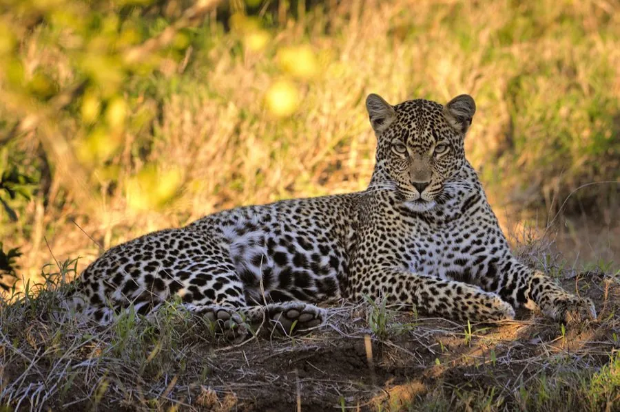

哺乳动物 · 动物界
金钱豹 Panthera pardus

适应力极强的独居猫科猛兽，全身布满梅花状的空心斑纹，既善攀爬也善游泳，能把猎物拖上树高悬保存。
- 分类
- 门脊索动物门纲哺乳纲目食肉目科猫科属豹属
- 栖息环境
- 从雨林、稀树草原到高山针叶林的多种生境，偏好岩丘、林缘与灌丛
- 地理分布
- 非洲撒哈拉以南、中东、中亚及东亚、南亚，中国多地有零星种群
- 保护级别
- IUCN 易危（VU）；中国国家一级保护动物
物种志
金钱豹体长 0.9–1.9 米（含尾），体重 30–90 kg，体形修长而肌肉发达。它的被毛为浅黄至棕黄色，全身布满空心的梅花状黑斑，斑心颜色浅于外圈，与猎豹的实心斑点明显不同；不同地区的个体底色深浅不一，黑化个体在森林中并不罕见。
金钱豹适应力极强，从非洲稀树草原、雨林到中亚山地和俄罗斯远东的针叶林都能生存，但偏好植被覆盖的岩丘与林缘。它昼夜均可能活动，以晨昏最活跃，捕食羚羊、鹿、野猪等中小型有蹄类，也会吃猴、鸟类和家畜。豹会把猎物拖上树高悬，避免鬣狗、狮子和狼群抢食，它善攀援也善游泳。由于皮毛贸易与栖息地破碎，全球野生种群数量已明显下降，多个地方种群极度濒危。
形态与习性
- 食性鹿类、野猪、羚羊等中小型有蹄类
- 体长0.9–1.9 m（含尾）
- 体重30–90 kg，雄性大于雌性
- 寿命野外约 10–15 年
- 繁殖妊娠期约 90–105 天，每胎 2–3 仔
- 活动节律晨昏最活跃，夜间亦捕猎
- 社会结构独居，领地以尿液和爪痕标记
趣味知识
- 金钱豹会把猎物拖到树上高悬，避免被鬣狗和狮群抢食。
- 它的斑纹为空心梅花状，猎豹的斑点则是实心的。
- 黑化金钱豹在东南亚森林中并不少见，被称为黑豹。
- 金钱豹的分布横跨非洲、中东和亚洲，是适应性最强的猫科之一。
生态关系
- 捕食 → 梅花鹿 豹类捕食鹿类